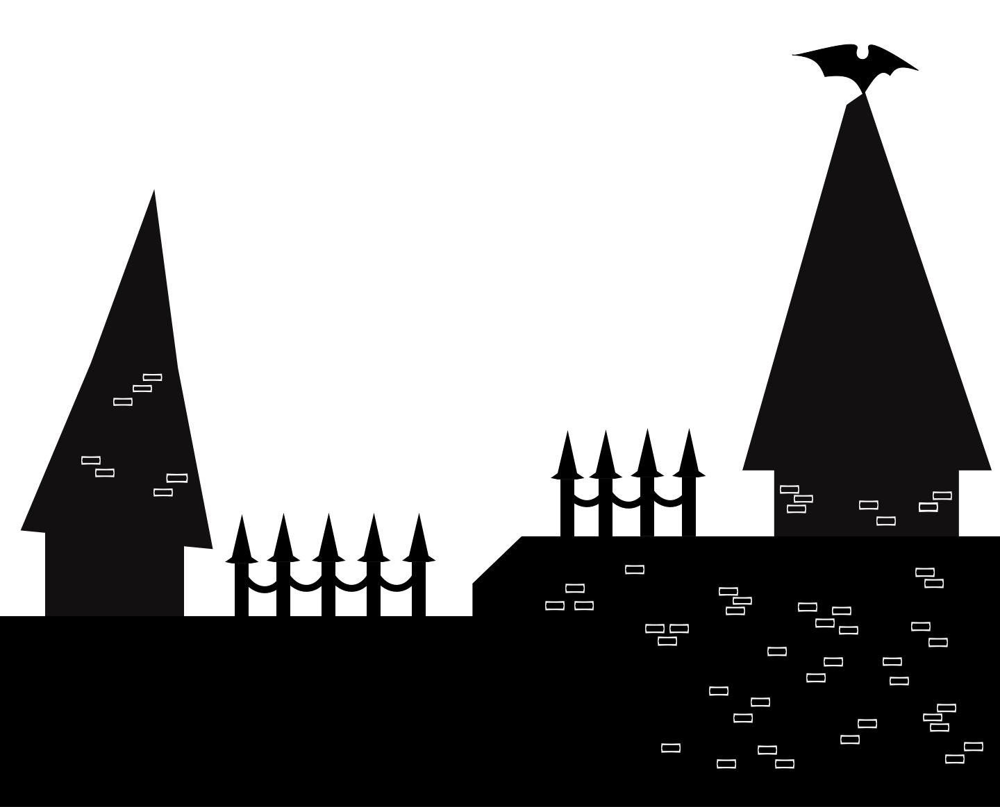

Alegreya — старостильная антиква, ориентированная
на набор художественной литературы.
Шрифт является вариативным и идеально подходит
как для заголовков, так и для текстов. Среди его
отличительных черт -динамичный и разнообразный
ритм, облегчающий чтение длинных текстов.
Vampire
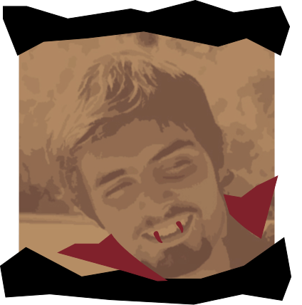
Шрифт Alegreya был разработан
аргентинским дизайнером Джоан
Пабло дель Перал в 2011 году.
Его создание вдохновлено желанием
улучшить читаемость текста
на печатных носителях и экранах.
Дель Перал хотел разработать шрифт,
который бы сочетал в себе элементы
традиционной антиквы
и современные дизайнерские решения.
a
Q
g
ω
ῧ
∫
f
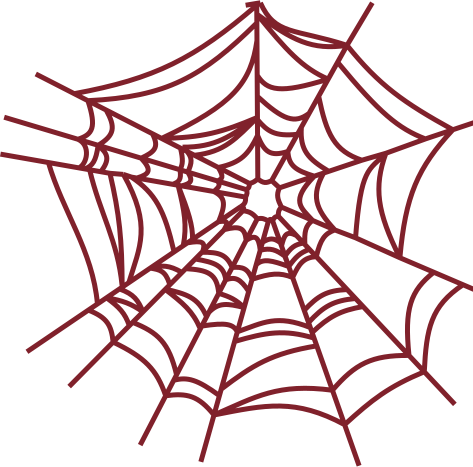
Aa

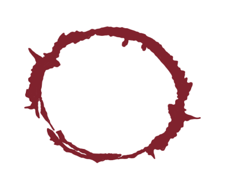
угловатые стыки
штрихов
асимметрия засечек
энтазис
прогибы штрихов
выразительные
кольцевые элементы
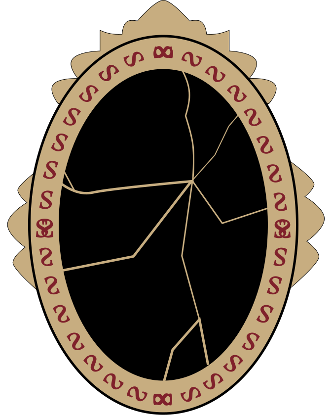
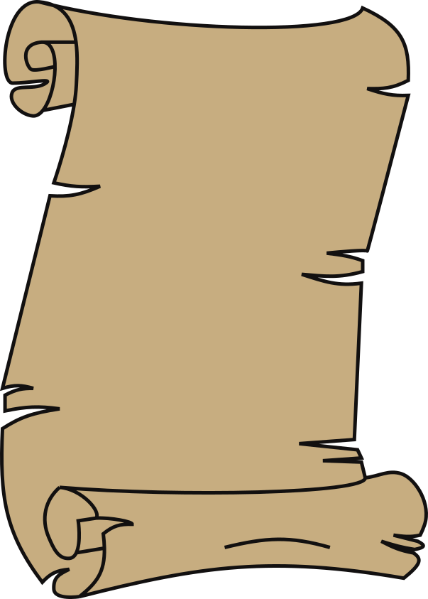
Языков
Начертаний
Начертaния
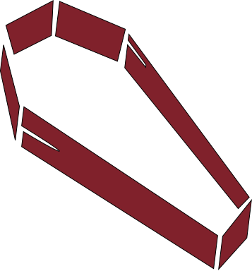
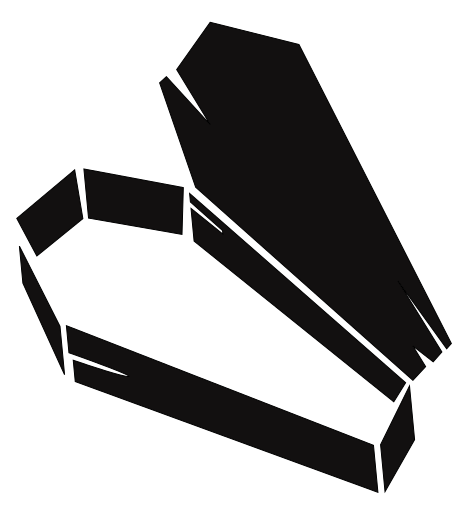
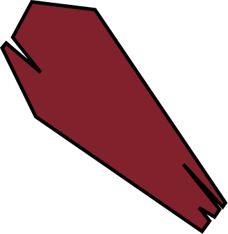
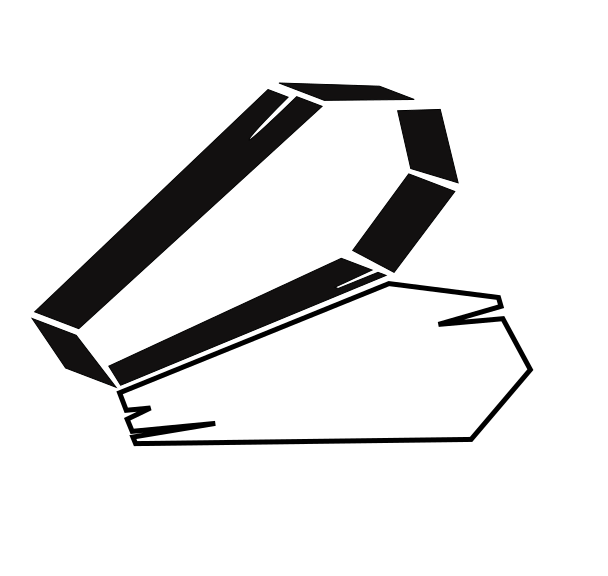
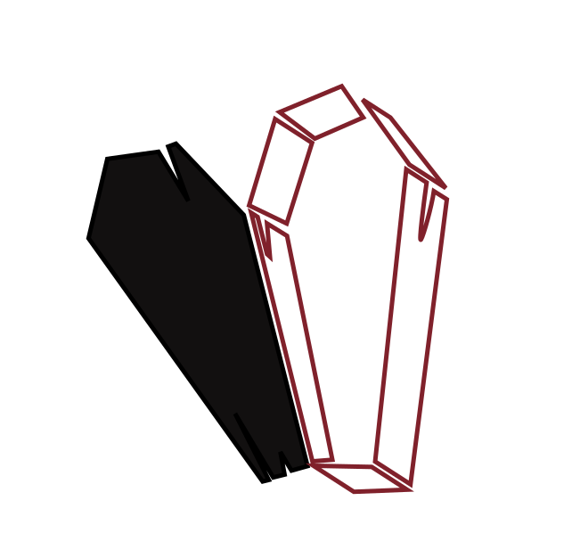
Italic
Regular
Medium
ExtraBold
Bold
Medium Italic
ExtraBold
Italic
Bold
Italic
Black
Italic
Black
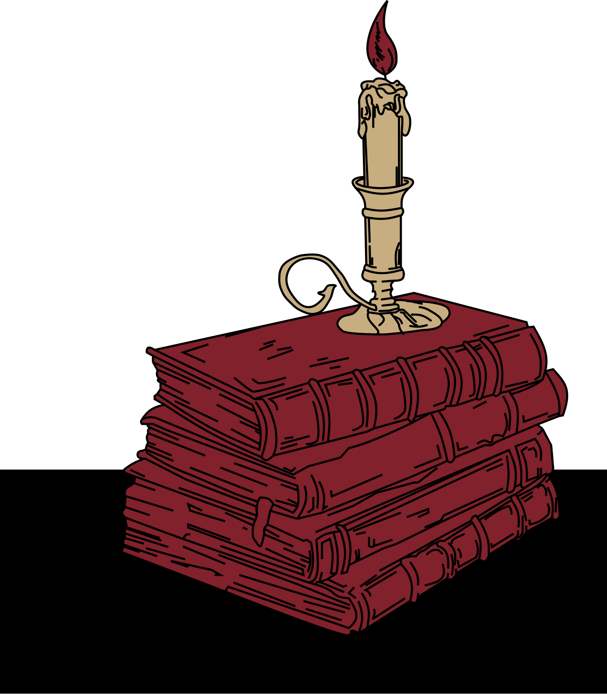
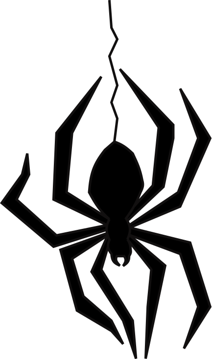
Печатные издания
Заголовок
Подзаголовок
Упаковка
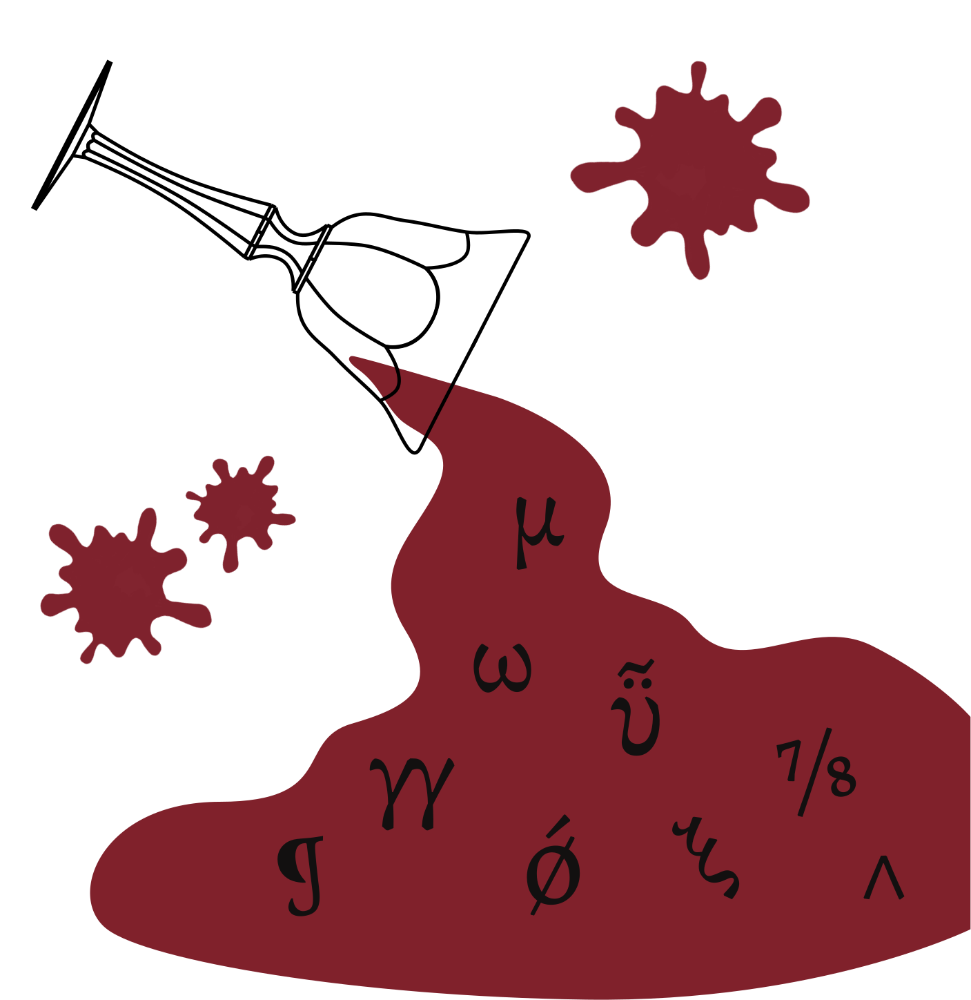
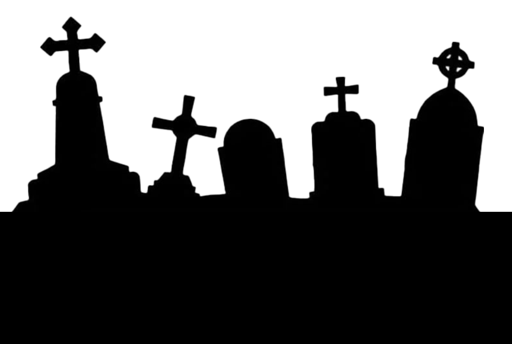
Викулина Мария
Куратор: Зародина Дарья
Б25ДЗ09